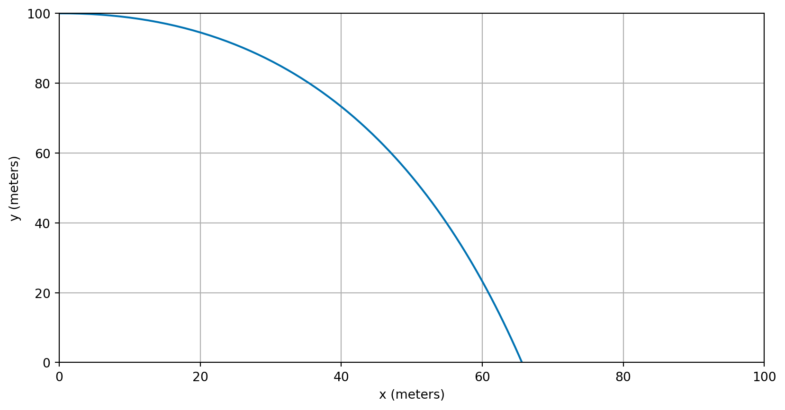
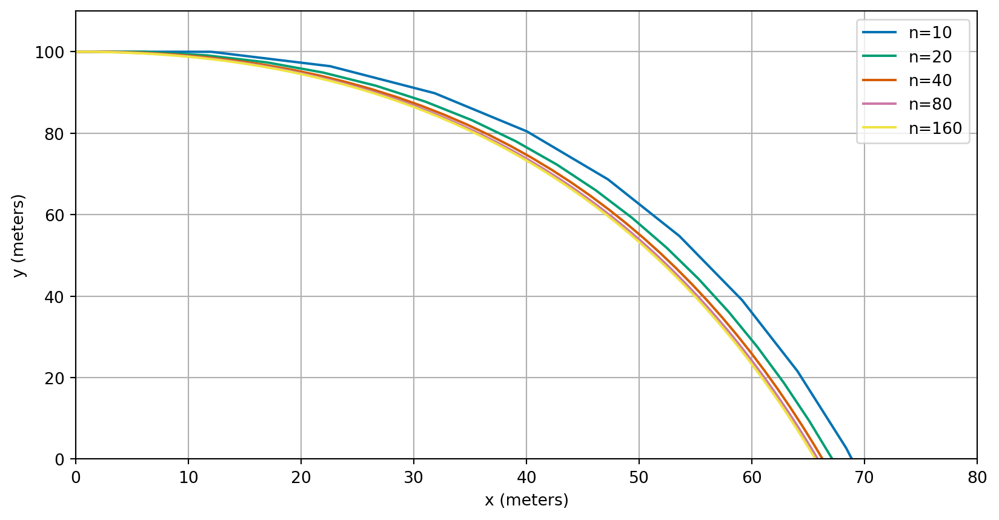

A model for the trajectory of an object
Give an example of how we can derive differential equations
Both applications typically spend large numbers of CPU cycles simulating the motion of bodies using Newton’s laws, based on the forces that are exerted upon them.
In particular, Newton’s second law of motion says that the net force on an object equals its mass multiplied by its acceleration: \[ \text{Force} = \text{Mass} \times \text{Acceleration}. \] Once we know the acceleration of an object we can solve differential equations to calculate its subsequent velocity and position…
Consider an object being launched horiztonally from the top of a tall building. We know its initial position and speed in each direction and wish to predict its trajectory.

In order to produce a model, we need to decide which are the most important forces acting on the object.
We use the following notation:
The above model leads to the following two differential equations (assuming the mass of the object is \(1\,\text{kg}\)): \[\begin{align*} U'(t) &= - k U(t) \\ V'(t) &= - k V(t) - g. \end{align*}\] We also know that, from the definition of speed (rate of change of distance), that \[\begin{align*} X'(t) &= U(t) \\ Y'(t) &= V(t). \end{align*}\]
We also need to know the initial conditions for the system. We choose one scenario: at \(t = 0\), \[\begin{align*} U(0) &= 20 \, \text{m}/\text{s} \\ V(0) &= 0 \, \text{m}/\text{s} \\ X(0) &= 0 \, \text{m} \\ Y(0) &= 100 \, \text{m}. \end{align*}\]
From now on we will omit the units in our calculations and assume they are implicit.
We can implement our model using Euler’s method:
def projectile(n, T):
"""
Simulate the 2D motion of a projectile using Euler's method.
"""
# initialise all arrays
t = np.empty(n + 1)
U = np.empty(n + 1)
V = np.empty(n + 1)
X = np.empty(n + 1)
Y = np.empty(n + 1)
# set initial conditions
t[0] = 0.0
U[0] = 20.0
V[0] = 0.0
X[0] = 0.0
Y[0] = 100.0
# define constants
k = 0.2
g = 9.81
# calculate step size
h = (T - 0) / n
# perform euler steps
for i in range(n):
U[i + 1] = U[i] + h * (-k * U[i])
V[i + 1] = V[i] + h * (-k * V[i] - g)
X[i + 1] = X[i] + h * U[i]
Y[i + 1] = Y[i] + h * V[i]
t[i + 1] = t[i] + h
return t, X, Y, U, V
Apply numerical techniques to solve systems of differential equations
The above projectile example shows how to use Euler’s method to solve a system of four differential equations. In general, a system of four differential equations will take the form: \[\begin{align*} y_1'(t) & = f_1(t, y_1(t), y_2(t), y_3(t), y_4(t)) \\ y_2'(t) & = f_2(t, y_1(t), y_2(t), y_3(t), y_4(t)) \\ y_3'(t) & = f_3(t, y_1(t), y_2(t), y_3(t), y_4(t)) \\ y_4'(t) & = f_4(t, y_1(t), y_2(t), y_3(t), y_4(t)). \end{align*}\]
Exercise 1 How does this general form relate to the projectile example?
Consider the following system of differential equations: \[ \vec{y}'(t) = A \vec{y} \quad \text{subject to the initial condition} \quad \vec{y}(0) = \begin{pmatrix} 0 \\ 1 \end{pmatrix}, \] where \(\vec{y}(t) = (y_1(t), y_2(t))^T\) and \(A = \begin{pmatrix} -1 & 1 \\ 1 & -2 \end{pmatrix}\). Approximate the solution at time \(T=1\) using 2 steps of Euler’s method with \(h = 0.5\).